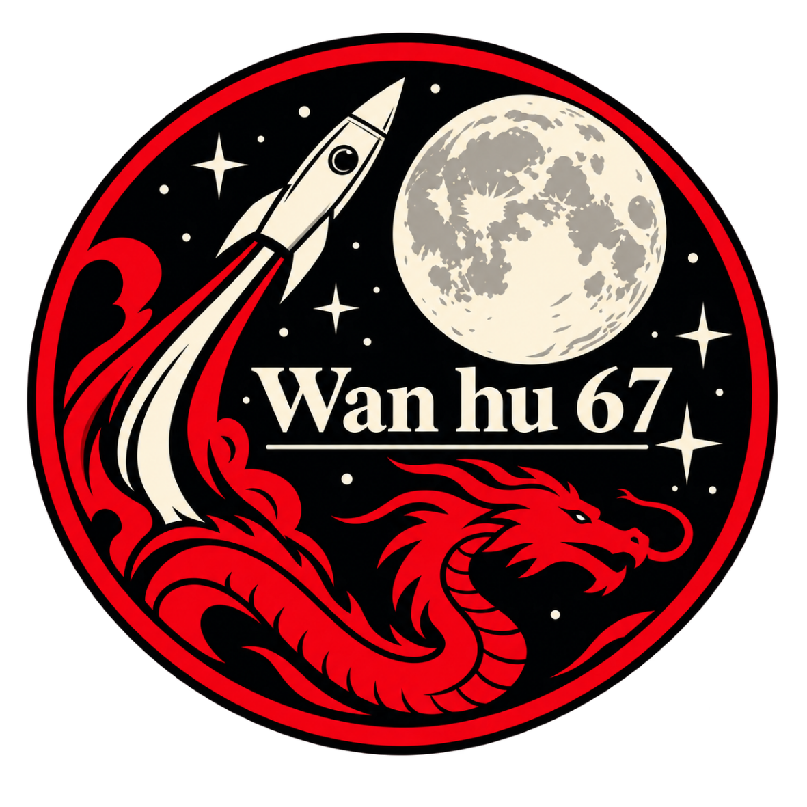

ROCKET TEC / BITÁCORA PUBLICADA
LANZAMIENTO DOCUMENTADOBETA-1 / WAN HU 67
Grupo 502 · Equipo 02 · Campus Sinaloa

01 / RESUMEN DEL VUELO
Lo que reportó el equipo
DISEÑOPLA AERO
MASA DECLARADA39.4 g
MOTORES RESTANTES2
Encendió y salió de la base. Se desvió lateralmente. No recuperado.
02 / DATOS DE LA ENTREGA
Bitácora completa
- Grupo
- 502
- Equipo
- 02
- Fecha del lanzamiento
- 2026-11-25
- Hora del lanzamiento (Sinaloa)
- 10:15
- Versión del diseño
- PLA AERO
- Masa lista para despegar (g)
- 39.4
- Modelo del motor
- Estes A10-3T
- Motores restantes después del lanzamiento
- 2
- Encendido y salida de la base
- Encendió y salió de la base
- Recuperación
- No recuperado
- Trayectoria observada
- Se desvió lateralmente
- Despliegue del paracaídas
- No se desplegó
- Lectura válida del sensor
- Lectura no válida
- Observaciones
- El cohete comenzó a tener una trayectoria curveada lo que resulto que este avanzara apuntando hacia el domo de la cancha de basquetbol
- Interpretación
- Dos motivos, el portamotor no fue asegurado con el tronco del cohete lo que hizo que con el minimo inpulso salga disparado el portamotor en vez de la ojiva, el otro factor es que el papel retardante fue puesto de manera muy compacta, lo que podría explicar porque la fuerza fue enviada en sentido contrario, mandando el portamotor afuera y la ojiva junto al tronco y el paracaidas en un sola pieza
- Cambio propuesto
- Se buscaria asegurar con capas de cinta el portamotor con el cuerpo del cohete principal asi como buscar reducir la cantidad de papel inifugo pare reducir su densidad y permitir que la energia del motor pueda hacer salir la ojva disparada, tambien relizar la construccion del cuerpo con mas rigor para evitar curvaturas en el trayecto
- Nombre del equipo
- WAN HU 67
Identificación del archivo recibido
Folio: BETA-1-G502-E02-R9fd9ab86-3451-499c-bf1f-d9b5ba14ede6
ID: 9fd9ab86-3451-499c-bf1f-d9b5ba14ede6
Elaboración declarada por el dispositivo: 2026-11-25T22:03:23.333Z (UTC).
03 / DATOS DEL REGISTRO
Consultar la entrega
La entrega indicaba BETA-2. El vuelo se clasificó en BETA-1 por la fecha declarada por el equipo (25 de noviembre de 2026).